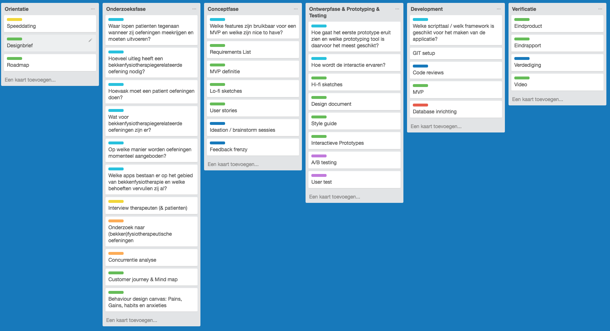
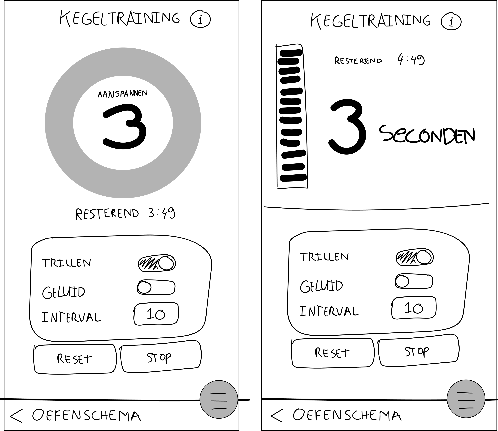
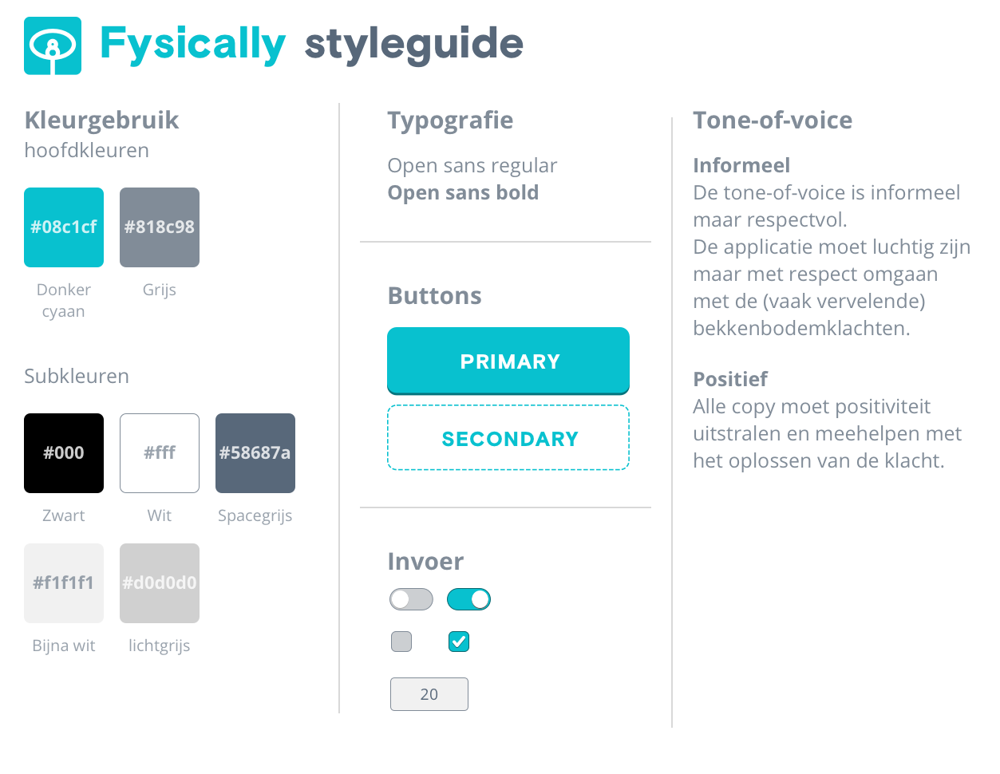

Begeleider
Joost Faber
Student
Berend Holtland
500655838
20-09-2017
Versie 0.1
Potentiele opdrachtgever
Da Costa Fysiotherapie
Link naar prototype (pas beschikbaar op 27-09-2017)
1. Dankwoord
Graag wil ik Joost Faber bedanken voor zijn toegewijde begeleiding tijdens dit project. Daarnaast bedank ik groepsgenoten Thinh Tran, Emiel Peperkamp en Michael Post voor de wekelijkse feedbackrondes die mijn eindproduct gemaakt hebben tot wat het nu is. Ook gaat mijn dank uit naar de respondenten, testpersonen en begeleidenden vanuit Da Costa Fysiotherapie.
2. Voorwoord
De markt voor digitale producten lijkt soms verzadigd te zijn, maar is het nog niet. Zo kijk ik zelf graag naar bedrijven en sectoren waar nog veel (digitale) innovaties mogelijk zijn. Ik kwam daarom uit bij Da Costa Fysiotherapie. Een kleine praktijk voor fysiotherapie met een specialisatie op het gebied van bekkenfysiotherapie en psychosomatische fysiotherapie.
Na meerdere, open gesprekken met de eigenaren, kwamen er enkele probleemstellingen naar boven. Slechts één probleemstelling werd niet onderuitgehaald.
3. Inleiding
3.1 Probleemstelling
Op welke manier worden oefeningen momenteel aangeboden?
Wanneer je als patiënt fysiotherapeutische klachten hebt, dan worden deze klachten vaak verholpen aan de hand van oefeningen. Dit geldt ook voor (bekken)fysiotherapeutische klachten. Bij Da Costa Fysiotherapie wordt nog gewerkt met papier om zo de oefeningen over te dragen aan de patiënt. Het gebruik van papier heeft complicaties. Je raakt het vaak kwijt en het is passief (en niet interactief waardoor het minder motiveert) [Therapeut > Bron 1].
De therapeut kan op deze manier nooit te weten komen of de patiënt zijn/haar oefeningen zorgvuldig en altijd uitvoert, en kan dus ook niet inschatten hoe effectief de oefeningen zijn.
Nu zijn er een hoop digitale toepassingen die een oplossing bieden voor begeleiding en interactie tijdens het oefenen [Bijlage concurrentiecanvas]. Deze toepassingen lossen echter niet alle problemen op [Therapeut > Bron 4]. Ook geven patiënten aan dat zij de bestaande toepassingen vaak te saai en te serieus vinden [Patiënt > Bron 1].
Uiteraard valt deze probleemstelling ook door te trekken naar algemene fysiotherapeutische klachten. Waarom doe ik dat niet? Omdat alle verschillende klachten zodanig complex zijn en de oefeningen hun eigen uitvoering hebben, dat de toepassing daardoor te complex zou worden en zijn focus zou verliezen. Door in te zoomen op bekkenfysiotherapie, is er een specifiekere doelgroep, en kan ik meer in de diepte gaan om vervolgens een betere oplossing te bedenken.
3.2 Stakeholders
Waar lopen patiënten tegenaan wanneer zij oefeningen meekrijgen en moeten uitvoeren?
Patiënt: Patiënten vinden het lastig om consistent te zijn in het uitvoeren van de oefeningen [Therapeut 2 > Bron 4]. Het vergt veel moeite en discipline aangezien het niet altijd leuk is om te doen. Een interactieve toepassing kan het leuker en makkelijker maken voor de patiënt om de oefeningen uit te voeren en de progressie bij te houden. Daarnaast kan het motivatie bieden om harder aan de klacht te werken. Een positievere ervaring biedt meer motivatie om de klacht (ook thuis) te verhelpen.
Therapeut: Therapeuten hebben geen inzicht in de mate waarin huiswerk door de patiënt daadwerkelijk wordt uitgevoerd en wat het met de patiënt doet [Therapeut 2 > Bron 5]. Daardoor is het lastig in te schatten welke oefeningen goed werken bij het verhelpen van de klacht.
3.3 Design challenge
Hoe kan een online, interactief product ervoor zorgen dat patiënten met bekkenbodemklachten meer gemotiveerd worden om de oefeningen die zij meekrijgen uit te voeren en daarnaast bekkenfysiotherapeuten meer inzicht geven in de effectiviteit van oefenschema's en de therapietrouw van de patiënten?
3.4 Deelvragen
3.4.1 Onderzoeksfase
- Waar lopen patiënten tegenaan wanneer zij oefeningen meekrijgen en moeten uitvoeren?
- Hoeveel uitleg heeft een bekkenfysiotherapiegerelateerde oefening nodig?
- Hoe vaak moet een patiënt oefeningen doen?
- Wat voor bekkenfysiotherapiegerelateerde oefeningen zijn er?
- Op welke manier worden oefeningen momenteel aangeboden?
- Welke apps bestaan er op het gebied van bekkenfysiotherapie en welke behoeften vervullen zij al?
3.4.2 Conceptfase
3.4.3 Ontwerpfase
3.4.4 Development
3.5 Roadmap
De roadmap is onderverdeeld in zes fasen. In realiteit liepen deze fasen door elkaar heen. Dit gold vooral voor de ontwerp-, prototyping- en developmentfase. Voor de leesbaarheid heb ik het document zo veel mogelijk opgedeeld in fases.
3.6 Woordenlijst
- VAS-score: Een wereldwijd erkende, betrouwbare en gemakkelijke methode om pijnintensiteit te meten. [websites > bron 1]
- Therapietrouw: De mate van opvolging van het advies van de therapeut.
- Native: Onafhankelijk van het web. Afhankelijk van het besturingssysteem zoals iOs of Android.
- Probe: Een fysiek apparaat dat in het lichaam wordt ingebracht om metingen te doen.
- Sketch: Een design tool voor het ontwerpen van user interfaces.
4. Onderzoeksfase
4.1 Doelgroep analyse
In contact komen met bekkenfysiotherapeutische patiënten is behoorlijk lastig. Therapeuten willen liever niet dat patiënten tijdens bezoekuren ondervraagd worden door derden. Het zijn intieme klachten en de therapeuten willen dan ook liever de integriteit behouden [Therapeut 2 > Bron 6].
Het voordeel is wel dat therapeuten veel weten over de patiënten. Ze weten wat de patiënten wel en niet fijn vinden, en wat zij willen en niet willen. Gelukkig kende ik iemand die bekkenfysiotherapeutische klachten heeft gehad, die wilde testen. Ze heeft aangegeven dat zij anoniem wil blijven.
Het overgrote deel van de patiënten met bekkenfysiotherapeutische klachten heeft te maken, of recent te maken gehad met zwangerschap [Therapeut 2 > Bron 8]. De scope van dit project is dan ook op deze doelgroep gericht. De therapeuten zijn stakeholders van dit project maar ook een beetje doelgroep. Ook voor hen moet het makkelijk kunnen zijn om de voortgang van de patiënt bij te houden.
Gebruikte onderzoeksmiddelen
Ik begon met het inplannen van interviews. Nadat ik deze interviews had afgenomen, heb ik de meest opvallende punten eruit gehaald en in een Journey gezet [bijlage journey]. Ook heb ik op basis van de geïnterviewde personen een empathymap gemaakt [bijlage empathymap]. Deze documenten dienen als leidraad voor de gemaakte ontwerpkeuzes.
4.2 Inhoudelijk onderzoek
Wat voor bekkenfysiotherapiegerelateerde oefeningen zijn er?
Hoe vaak moet een patiënt oefeningen doen?
4.2.1 Oefeningen
Patiënten krijgen tussen de twee en zes oefeningen per dag mee, afhankelijk van wat zij aankunnen. Een ontmoeting tussen therapeut en patiënt vindt normaal gezien 1 keer per week plaats. In die week voert de patiënt elke dag de oefeningen uit die door de therapeut zijn meegegeven. Er zijn vier soorten oefeningen met elk hun variaties. Variaties zijn bijvoorbeeld houdingen waarin de oefening wordt uitgevoerd. Voor een uitgebreide beschrijving van de oefeningen, zie [bijlage oefeningen].
De vier oefeningen zijn:
- Coördinatie. Om je bewust te maken van de spieren.
- Kracht en uithoudingsvermogen Om de "slow" spieren sterker te maken.
- Snelle oefening Om de "twitch en gast" spieren te training.
- Ontspanning Om te leren de spieren te ontspannen.
4.2.2 VAS-score
De VAS-meting is een meting die binnen veel medische instanties wordt gebruikt om subjectieve metingen te doen (meestal pijn) [websites > bron 1]. De meting is wereldwijd erkend. Ook wordt het binnen fysiotherapie gebruikt om de heftigheid van bepaalde klachten te meten. Voor deze toepassing is het een belangrijke, makkelijke en relatief betrouwbare manier om voortgang te meten. Het is absoluut niet de bedoeling dat de therapeut op basis van deze informatie beslissingen maakt, maar het dient juist een toevoeging te zijn op de methoden die de therapeut op dit moment al gebruikt. Een van die methoden is bijvoorbeeld het meten door middel van een probe. [Therapeut 2 > Bron 7]
4.3 Kansen en bedreigingen
4.3.1 Bedreigingen
Welke apps bestaan er op het gebied van bekkenfysiotherapie en welke behoeften vervullen zij al?
Er zijn meerdere apps op de markt die zich bezighouden met bekkenfysiotherapie [Bijlage concurrentiecanvas]. Het overgrote deel van deze apps richt zich op het begeleiden van de patiënt. Een paar richten zich op het motiveren van de patiënt. Ook doelen sommige apps op het verschaffen van inzicht in de voortgang voor de therapeut.
4.3.2 Kansen
Het klinkt alsof de hoofdvraag hiermee beantwoord is. Wat valt er voor mij dan te verbeteren?
Bestaande apps worden vaak als onhandig en saai ervaren [Therapeut > Bron 4]. Daarnaast is de enige vorm van motivatie binnen bestaande apps, het ontvangen van push notificaties. Push notificaties worden door veel mensen als irritant beschouwd, zeker wanneer ze niet nodig zijn [websites > bron 2]. Push notificaties kunnen absoluut helpen, maar over het gebruik moet goed worden nagedacht. Verkeerd gebruik van push notificaties kan tot catastrofale gevolgen voor je app leiden.
Naast motivatie, is er saaiheid. De bestaande apps bieden een klinische ervaring. Veel patiënten willen juist dat het uitvoeren van oefeningen leuk wordt [Patiënt > Bron 2]. Uiteraard moeten klachten serieus worden genomen, maar dat betekent niet dat het gehele revalidatieproces serieus moet zijn.
Bij bestaande apps kun je aan het einde van de oefening een notitie maken. Er wordt echter niks met die data gedaan, behalve dat je het terug kunt lezen. Door de VAS-score te gebruiken krijg je veel meer inzicht in het revalidatieproces. Denk bijvoorbeeld aan de ups en downs tijdens oefeningen. Daarnaast kun je de score koppelen aan motivatie elementen. Wanneer de patiënt veel oefent en het de cijfers worden steeds beter, kan dit een direct motivatie zijn om meer te oefenen. Dit effect kan worden verhoogd door de data visueel weer te geven, wat andere apps niet doen.
In bestaande apps is de begeleiding minimaal. De opties die je hebt zijn visuele begeleiding en begeleiding door middel van tril of een geluidje. Veel patiënten vinden het fijn om door een goede stem te worden begeleid [Therapeut > Bron 3]. Die mogelijkheid moet er dus ook zijn.
4.4 Conclusie Onderzoek
Er zijn al een aantal bekkenbodem gerelateerde apps op de markt. Veel daarvan lopen mogelijkheden mis of voeren bepaalde functies verkeerd uit. Door te kijken naar wat de patiënten echt willen en wat ze motiveert, zou mijn toepassing beter kunnen zijn dan de bestaande toepassingen.
5. Conceptfase
5.1 Ideation
Tijdens ideation sessies, samen dan wel alleen, heb ik nagedacht over de belangrijkste features binnen de toepassing. Ik maakte hierbij gebruik van een digitaal touchscreen om virtuele post-it's op te "plakken" [bijlage "post-it"].
5.2 must-haves
Welke features zijn bruikbaar voor een MVP en welke zijn nice-to-have?
Een gehele lijst van requirements staat op Github. Ik beschrijf hieronder de features die de app op zijn minst als extra moet hebben om de probleemstelling te kunnen tackelen en beter te zijn dan de concurrent:
Progressie gekoppeld aan VAS-score
Uit het onderzoek blijkt dat de patiënt weinig gemotiveerd is om de oefeningen uit te voeren [Patiënt > Bron 1]. Er zijn genoeg methoden die ervoor zorgen dat een gebruiker van een digitale toepassing, de toepassing blijft gebruiken [boeken > bron 1]. Het zou ideaal zijn als de VAS-score gekoppeld wordt aan de progressie van de patiënt. Wanneer de patiënt ziet dat door meer te oefenen, de resultaten beter worden, leidt dat hopelijk tot meer motivatie. Indien de resultaten niet beter worden, kan de therapeut betere conclusies trekken en de benodigde handelingen verrichten, zoals verwijzing naar een chirurg als het een hardnekkiger probleem betreft.
Humor, sexyness
Veel patiënten hebben aangegeven dat zij de bestaande apps te saai of niet sexy genoeg vonden [Therapeut > Bron 11]. Dit helpt ook niet mee in de motivatie. Door de oefeningen leuk te maken, zijn patiënten waarschijnlijk sneller geneigd om de oefeningen uit te voeren.
Vrijheid in begeleiding
Patiënten prefereren allemaal hun eigen manier van oefenen. De één kijkt graag naar het scherm met tril-feedback. De ander doet het graag op basis van geluid of stembegeleiding [Therapeut > Bron 3]. Er moeten op zijn minst meerdere manieren van begeleidende feedback zijn om aan ieders wens te voldoen.
Zelf instellen van oefenschema binnen de app.
De therapeut heeft weinig tijd en moet snel en gemakkelijk een schema aan kunnen passen [Therapeut > Bron 8]. Bijvoorbeeld het aanpassen van de herhalingen, sessies en de variaties.
5.3 Een app, of iets anders?
Uit de Feedback Frenzy kwam de trechte vraag naar voren "Waarom een app? en niet iets anders?". Goeie vraag. Ik heb nagedacht over verschillende mogelijkheden. Een fysiek apparaatje. Hiermee zou je zelfs preciezere metingen kunnen doen, zoals met een "probe". Een groot nadeel van zo'n apparaat is dat het veel geld kost. Een app kan gratis zijn en is makkelijk verkrijgbaar. Daarnaast, en dat is een assumptie, denk ik dat veel mensen die op zoek zijn naar begeleiding, dan wel op zoek gaan naar een app of naar een menselijke begeleider.
5.4 Businessmodel
Over het businessmodel heb ik meerdere malen nagedacht. Ook heb ik daar met de therapeuten zelf naar gekeken. Het zou een optie kunnen zijn om de app door patiënten te laten kopen. Ik heb dit idee langs een paar mensen gehaald en die gaven aan dat ze dat niet zouden doen tenzij het écht op aanraden van de therapeut is. Het leek mij daarom ook veel logische om de app als extensie van de therapie in te zetten. De therapeut betaalt een x-bedrag om de app te kunnen gebruiken. Voor de patiënt is het dan gratis. Of dit een werkend businessmodel is, kunnen we pas zien wanneer het product op de markt verschenen is.
5.5 Schetsen
Voor het uitvoeren van oefeningen keek ik naar andere apps. De meeste apps maakten gebruik van een cirkel waarop afgeteld werd. Ik wilde echter ook iets anders proberen:
Uit de eerste test bleek dat de cirkel toch de voorkeur genoot [User tests > Bron 1]. Ik ben al vrij snel binnen Sketch gaan werken. Ik werk er sneller mee en kan interacties beter uitbeelden.
6. Ontwerpfase
6.1 Style en Branding
6.1.1 Discretie
Binnen de applicatie wordt gebruik gemaakt van zeer gevoelige informatie. Het zijn onderwerpen waar je het het liefst niet met anderen over hebt. Om die reden heb ik ervoor gekozen om de applicatie, in tegenstelling tot concurrerende apps , geen naam te geven die iets met bekkenbodemklachten te maken heeft. "Fysically" zegt iets over het menselijk lichaam, zonder gevoelige informatie kenbaar te maken. Daarnaast biedt het mogelijkheid tot uitbreiding naar andere takken binnen fysiotherapie.
6.1.2 Styleguide
In eerste instantie gebruikte ik een combinatie van oranje en blauw. Dit heb ik later veranderd. Ten eerste omdat ik sowieso van plan was om die kleuren tijdelijk te behouden en daarnaast omdat ze als saai werden ervaren [User tests > Bron 2].
De bovenstaande kleuren stralen meer energie uit en zijn aantrekkelijk bij vrouwen, zonder daarbij te feminien te zijn.
Ik kies voor een tone-of-voice die de problemen van de patiënt serieus neemt, zonder daarbij te saai te zijn. Ook moet de copy positief worden ingestoken.
6.2 Design Patterns
Ik maak binnen de toepassing veel gebruik van Material Design. Het is een van de bekendste design guidelines en is zowel bruikbaar binnen iOs als Android.
Voor het gebruik van bepaalde functies en componenten heb ik inspiratie gehaald uit een aantal bestaande patterns. Ik heb de patterns niet altijd in hun volledigheid overgenomen, maar een twist gegeven die aansluit op de gehele applicatie. Zie de bijlage voor de specifieke toepassingen.
Ik kies ervoor om zoveel mogelijk interacties te laten plaatsvinden door middel van ingebouwde interacties van het besturingssysteem. Gebruikers zijn vertrouwd met deze interacties en hoeven niet iets nieuws aan te leren, wat resulteert in een kortere leercurve. Denk bijvoorbeeld aan "pickers" en tekstvelden.
6.3 Persuasion
Het doel van verleiding is mensen iets te laten doen. Er zijn echter meerdere mogelijkheden dan alleen motiveren. Wanneer je iets gemakkelijk maakt gaan mensen het ook sneller doen. Ik heb hiervoor het Behaviour Model van B.J. Fogg in het achterhoofd gehouden [websites > bron 3]. Hoe belangrijker de functie is, hoe makkelijker het voor de gebruiker moet zijn om uit te voeren. Een voorbeeld volgt.
6.4 Applicatie
Ik beschrijf en toon hier de schermen van de applicatie aan de hand van user stories. Alle user stories staan in deze [bijlage]. Ook vertel ik over aanpassingen die hebben geleid tot het uiteindelijke design.
6.4.1 Onboarding
De patiënt opent de app voor het eerst

Stap 1: De patiënt is voor het eerst bij de therapeut. Samen installeren zij de app en wordt deze geopend. De therapeut krijgt via het controlepaneel [zie schetsen] een unieke code die gekoppeld is aan de gegevens van de patiënt. Zij vullen deze in [onboarding 1b]. Als de invoer incorrrect is, ontvangt de gebruiker een melding die aangeeft wat er fout is. Als de patiënt de app pas thuis installeert (wat niet de bedoeling is), en geen code heeft ontvangen, dient hij/zij deze bij de therapeut aan te vragen.
Stap 2: Wanneer de patiënt succesvol is ingelogd, wordt er gevraagd of hij/zij wil beginnen met een oefening. Als de patiënt "Nee" klikt. Gaat hij/zij meteen door naar het schema [zie schema]. Wanneer de patiënt "Ja" aangeeft, wordt de eerste oefening geopend.
6.4.2 Een oefening uitvoeren

{kind=link}
{kind=link}
{kind=link}
![[zie schetsen]](img/controlepaneel.png){kind=link}
{kind=link}
{kind=link}
{kind=link}
{kind=link}
Stap 1: De eerste oefening is een voorbeeld oefening. Het gaat er hier om dat de patiënt leert begrijpen hoe de app werkt. Het is dan ook de bedoeling dat patiënt en therapeut deze stap samen doorlopen.
Stap 2: De patiënt wordt gewezen op de mogelijkheid tot het instellen van de begeleiding naar voorkeur. Hier kan de patiënt kiezen tussen begeleiding door trilsignaal, geluid, een stem en muziek [Oefening instellingen 1]. In eerste instantie stonden de instellingen direct in het oefeningen scherm. [zie eerdere schermen] er was echter weinig ruimte tot uitbreiding en er waren te veel elementen voor de gebruiker om op te focussen. Door deze elementen te scheiden, waren zij beter te interpreteren [User tests > Bron 3]
![[zie eerdere schermen]](img/oefening_oud_1.png){kind=link}
Hoeveel uitleg heeft een bekkenfysiotherapiegerelateerde oefening nodig?
Stap 3: Wanneer de patiënt meer uitleg nodig heeft, of niet bij de therapeut was en geen uitleg heeft gehad, kan hij/zij de uitleg nog eens bekijken in video- of tekstvorm [oefening uitleg 1]. In eerste instantie was er geen uitleg, omdat het belangrijk is dat de uitleg door de therapeut wordt gedaan [Therapeut 2 > Bron 7]. Tijdens de Feedback Frenzy gaven meerdere mensen aan dat ze wel iets van uitleg in de vorm van tekst of beeld wilden zien [Bijlage feedback frenzy]
Stap 4: De patiënt kan vervolgens beginnen met oefenen. Er wordt afgeteld en de oefening begint [oefening 1b en 1c]. Wanneer de oefening klaar is wordt het feedbackscherm getoont [Oefening feedback 1].
{kind=link}
{kind=link}
{kind=link}
Stap 5: In het feedbackscherm kan de patiënt een cijfer aangeven. Volgens de officiele VAS-methode betekent een "10" erg veel last en een "1" geen last. Deze data wordt gebruikt om later de voortgang bij te kunnen houden. De patiënt kan ook eventueel een gedetailleerde beschrijving geven van het gevoel. Wanneer de patiënt een beschrijving wil invoeren, wordt het tekstveld groter.
Ik heb dit systeem ook getest met een slider. Het werd echter minder goed ontvangen, omdat het op een klein scherm en met grote vingers lastig te besturen was [User tests > Bron 4]. [zie eerdere schermen]. Wanneer de patiënt op "Opslaan" klikt gaat hij/zij naar het oefenschema.
![[zie eerdere schermen].](img/VAS_1.png){kind=link}
6.4.3 Oefenschema
{kind=link}
{kind=link}
{kind=link}
{kind=link}
Stap 1: Er staat een standaard oefenschema ingesteld. Als de patiënt een eerste oefening heeft voltooid, dan wordt deze gemarkeerd als voltooid. Zo krijgt de patiënt direct een beter beeld van hoe de applicatie werkt en wordt hij/zij vast op weg geholpen.
Het oefenschema laat per dag de oefeningen zien die gedaan dienen te worden. Een oefening wordt ook wel een "serie" genoemd. Er zijn dus vier soorten series [bijlage series]. Wanneer een serie voltooid is, wordt deze ingekleurd. Dit zorgt voor een stimulerend effect [User tests > Bron 5].
Het "kaarten" systeem dat ik in eerste instantie had gebruikt, kwam nog niet goed over als een planning [User tests > Bron 5] [zie eerdere schermen]. (Een serie wordt weergegeven als "kaart".) Daarnaast was er veel onnodige witruimte.
![[zie eerdere schermen]](img/schema_oud_1.png){kind=link}
Ik besloot om de kaarten in het laatste scherm kleiner te maken. Zo kwam er ruimte vrij voor een tijdlijn en een manier om beter aan te geven dat een oefening/kaart afgevinkt was. Die aanpassing leidde tot meer duidelijkheid.
Stap 2: Door op de "Material design" button te tikken, Kunnen er series worden aangepast, toegevoegd of verwijderd [Oefenschema aanpassen 1]. Elke serie heeft zijn eigen parameters. De ingestelde series worden elke dag herhaald totdat deze weer aangepast worden. Series kunnen worden toegevoegd door op "oefening toevoegen" te tikken. Er wordt dan een "native picker" geopend. Het aanpassen dient alleen te gebeuren in overleg met de therapeut.
Stap: 3 Na een aantal dagen zou het schema er dus uit kunnen zien zoals in [oefenschema 1b]. Er zit geen restrictie op het aantal oefening dat mag worden toegevoegd.
6.4.4 Navigatie
{kind=link}
{kind=link}
De navigatie was een complex iets, en heeft veel iteraties gehad. De drie belangrijkste functies die direct zichtbaar moeten zijn, zijn de sessies/het schema, de voortgang en daarbij nog het profiel van de patiënt. In eerste instantie stond de navigatiebalk bovenaan. Veel Apps hebben echter een navigatiebalk onderaan het scherm. Dit heb ik ook gebrobeerd te doen [zie eerdere schermen]. Het voordeel hiervan is dat de navigatiebalk dicht bij de vingers van de gebruiker zit. Het nadeel hiervan is dat mensen toch gewend zijn om als eerste in de linker bovenhoek te kijken. Het laatste argument bleek toch sterker mee te spelen dan het eerste [User tests > Bron 7]. Daarnaast creëerde het verwarring met de knop voor het aanpassen van de series dus heb ik het teruggedraaid [User tests > Bron 6].
![[zie eerdere schermen]](img/navigatie_oud_1.png){kind=link}
Waarom koos ik ervoor om het menu uitklapbaar te maken? Je zou kunnen zeggen dat de drie knoppen prima in de navigatiebalk passen. Dat klopt in principe in dit geval, maar op kleine telefoons en schermen met een lange titel, is er niet zoveel ruimte meer.
6.4.5 Voortgang bekijken
{kind=link}
{kind=link}
Een van de belangrijkste functies van de applicatie is het bijhouden van de voortgang. De opgeslagen data moet op een makkelijke manier inzichtelijk maken of de oefeningen effectief zijn en hoe vaak de patiënt oefeningen uitvoert.
Om de patiënt te motiveren, kan hij/zij badges ontvangen voor het uitvoeren van oefeningen. Een progressiebalk toont wanneer de patiënt een nieuwe badge haalt [Voortgang VAS-meting 1]. Door badges te halen kan de patiënt nieuwe achtergrondmuziek uitspelen. In eerste instantie waren dat stemmen, maar die bleken te cruciaal te zijn voor de applicatie [Therapeut 2 > Bron 1]. De patiënt kan ook zien hoeveel van de oefeningen hij/zij uitgevoerd heeft ten opzichte van het totaal. Dit bleek effectief te zijn. De gebruiker wilde namelijk 100% halen [Therapeut > Bron 5].
Aan de hand van de hoeveelheid uitgevoerde oefeningen en de mate van verbetering van de VAS-score. Wordt een "efficientie index" getoond. Dit moet een makkelijke manier zijn om snel te kunnen zien hoe effectief de oefening is. Om meer inzicht te krijgen in de effectiviteit, kan er een datavisualisatie getoond worden [Voortgang VAS-meting 1]. Om door de tabel heen te bewegen, swipe je naar lings of rechts. Dit was voor de tester vrij vanzelfsprekend. Wat wel opviel was dat de tester ook op bolletjes probeerde te klikken in plaats van alleen te swipen. In een eerdere versie zat de grafiek bovenaan in het scherm [zie eerdere schermen]. Wat uit de eerste test naar boven kwam was dat de bediening in het eerste scherm erg onhandig was [User tests > Bron 9]. De tester kwam er namelijk lastig bij met haar vinger, en de grafiek was erg klein. In scherm 2 heb ik dit opgelost door de grafiek onderaan te plaatsen en groter te maken.
![[zie eerdere schermen]](img/grafiek_1.png){kind=link}
Alle data wordt vernieuwd nadat de series zijn aangepast. Zo kan de therapeut bij elke afspraak zien hoe het de afgelopen week is gegaan.
6.4.6 Mijn Account
{kind=link}
Het profiel is op dit moment redelijk leeg. De patiënt kan hier uitloggen en meldingen aan of uitzetten. Er zullen naarmate de app complexer wordt, ook meer instellingen komen.
6.4.7 Notificaties
{kind=link}
{kind=link}
Ik heb ervoor gekozen om alleen gebruik te maken van push berichten wanneer de patiënt een paar dagen niet heeft geoefend. Een push bericht moet vooral gebruikt worden om nuttige informatie af te leveren waar de gebruiker van op de hoogte wil worden gesteld, zoals een Whatsapp bericht. Push berichten ter motivatie kunnen nuttig zijn om iemand te triggeren, maar moeten niet vaak worden gebruikt [websites > bron 2]. Het is dan ook de bedoeling dat een push bericht, zoals in [Notificaties 1] maximaal 1 keer per week kan worden verstuurd.
Naast push notificaties, heb ik ook "in-app" notificaties geïntroduceerd. Deze notificaties dienen deels ter motivatie en anderzijds als heads-up. Stel dat je bijvoorbeeld elke dag heel veel oefeningen moet doen. Dan is zo'n heads-up handig om aan te geven hoeveel oefeningen er nog gedaan moeten worden. De testers gaven aan dat ze dit wel fijn vonden voor het overzicht, maar alleen op de juiste momenten en niet te vaak.[User tests > bron 11]
6.5 Conclusie Design
Het ontwerp heeft een hoop metamorfoses ondergaan; vooral op microniveau. Sommige schermen, zoals het profiel, zijn er later bij gekomen. Het uiteindelijke ontwerp wordt goed ontvangen. Nu is het tijd om een lange termijn test uit te voeren.
7. Prototypen en ontwikkelen
Hoe gaat het eerste prototype eruit zien en welke prototyping tool is daarvoor het meest geschikt?
7.1 Technology driven design
7.1.1 Wat is Technology driven design?
Voor mij betekent Technology driven design: het itereren op een ontwerp door al prototypend te ontwikkelen. Dat bekent dus dat ik vrij snel ben begonnen met coderen. Na coding sessies ben ik steeds gaan "rapid prototypen" Dat betekende vaak dat ik de eerste beste persoon in mijn omgeving bepaalde flows liet doorlopen.
7.1.2 Wat zijn de voor- en nadelen?
Vanuit code prototypen kan ervoor zorgen dat je focus verliest. Het is wel eens voorgekomen dat ik veel te lang bezig was met het ontwikkelen van een feature, terwijl dat niet nodig was. Technology driven design kan er juist ook voor zorgen dat je inspiratie haalt uit de mogelijkheden met code. Denk hierbij aan animaties en dergelijken. Uiteraard kun je animaties ook testen met een tool als Framer of Principle, maar daar voelen ze toch anders dan wanneer je ze in de browser draait. Een ander voordeel is dat je bepaalde elementen juist heel snel kunt aanpassen. Door met duidelijke, geordende code te werken, kun je iets er anders uit laten zien door één CSS class aan te passen.
7.2 Scripttaal en framework
Welke scripttaal / welk framework is geschikt voor het maken van de applicatie?
Mijn toepassing is een webapplicatie. In de toekomst zou het het best een native app kunnen zijn. Aangezien ik wil afstuderen als Designer met een voorkeur voor web development, heb ik mij hier ook op gefocust. Een goed framework voor mijn applicatie zou React JS zijn. Het biedt de mogelijkheid om modulaire apps op te bouwen die "performant" zijn. Mijn kennis van React is echter bescheiden; daarom zou ik daar te veel tijd aan kwijt zijn geweest.
De applicatie is gebouwd in HTML. Daarbij maak ik gebruik van Javascript en SCSS. SCSS is een CSS "preprocessor" die het schrijven van CSS efficiënter maakt. Voor Javascript gebruik ik ook jQuerry. Later heb ik het gebruik van jQuerry zoveel mogelijk uitgefaseerd; Backend scripts vallen niet onder het MVP, maar ik heb er wel mee geëxperimenteerd. Hiervoor heb ik NodeJS en mySQL gebruikt.
7.3 Opbouw applicatie
7.3.1 Structuur
De applicatie bestaat uit een enkel HTML bestand. Ik heb plannen om dit uiteindelijk op te breken zodat de applicatie modulair wordt. De CSS code is wel opgedeeld in componenten. Zo kunnen ze eventueel worden hergebruikt en houdt het de applicatie overzichtelijk. Het Javascript is een enkel bestand met daarin alle functies en variabelen.
7.3.2 Progressive Web App
{kind=link}
Een progressive web app is eigenlijk een website / web app die door de browser in een apart jasje wordt gestoken. De website / app kan zelfs met een icoontje op het startscherm worden weergegeven zodat je het idee hebt dat het een native app is. zie [Progressive Web App]. Daarnaast installeer je een zogehete "Service Worker" [websites > bron 4] die ervoor zorgt dat alle bestanden lokaal kunnen worden opgeslagen. Je kunt de app dan dus ook offline gebruiken. In Fysically maak ik ook gebruik van de Progressive Web App. Het voordeel is dat je geen aparte app hoeft te bouwen voor iedere smartphone. Het nadeel is dat animaties vaak wat stroever zijn en dat er nog niet evenveel mogelijkheden zijn als met een native app.
7.4 Code review
Op 12 juli hielden wij als groep een code review. Deze review heeft mij veel verder geholpen en tevens gewezen op een aantal "bad practices" die ik toepaste in mijn project. Voor meer details zie bijlage.
7.5 Conclusie Development
Technology driven design werkte voor mij voordelig maar ook nadelig. Ik ben toch vaak teruggekeerd naar Sketch om schermen opnieuw te ontwerpen. Dat ging vaak wat sneller. Wat wel heel fijn is, is dat de applicatie grotendeels al staat. Het is dus relatief weinig werk om het nog te realiseren. Ik zou volgende keer denk ik toch nog wat langer de tijd nemen om alle schermen te ontwerpen binnen Sketch en ze goed te testen om daarna pas te beginnen met coderen.
8. MVP en verder
8.1 Oplossing tot nu toe
Bij CMD hebben we niet alleen geleerd om droogjes een designproces te volgen. Als designer ben je verantwoordelijk voor wat je creëert. Het is daarom belangrijk om na te denken over de maatschappelijke impact van je project. Zo heb ik ook nagedacht over de impact van mijn project. Ik heb rekening gehouden met sociale behoeften door bij elke designkeuze na te denken over de privacy van de patiënt. De achterliggende gedachte van de applicatie is om een betere maatschappij te creëren waar klachten sneller verholpen worden.
Het product op dit moment is slechts het begin van deze app. Ik ben van plan om het verder uit te breiden en op de markt te brengen.
Voldoet het product aan de minimale eisen?
Hiervoor gaan we de minimale eisen langs die eerder in dit hoofdstuk zijn opgesteld.
Progressie gekoppeld aan VAS-score
In de huidige versie van de applicatie wordt de geboekte progressie van de patiënt bijgehouden. Deze progressie wordt weergegeven in een grafiek met daarbij informatie over de VAS-score en het percentage uitgevoerde oefeningen. Zowel de patiënt als de therapeut heeft nu meer inzicht in de effectiviteit van de oefening. Lange termijn tests moeten gaan aantonen of dit leidt tot meer motivatie bij de patiënt. De therapeut geeft echter aan hier beter inzicht door te krijgen. [Therapeut > Bron 8]
Humor en Sexyness
De in-app notificaties en begeleidende stemmen zorgen voor meer variatie en minder saaiheid. Uit de tests blijkt dat patiënten dit fijn vinden [User tests > Bron 11]. Ook hier moeten lange termijn tests aantonen of dit leidt tot meer motivatie.
Vrijheid in begeleiding
Een belangrijke feature binnen de toepassing is de hoeveelheid mogelijkheden omtrent begeleiding. De patiënt kan kiezen of hij/zij begeleid wil worden door een stem, een geluidje, een trilsignaal of een visuele weergave. Daarnaast kan tijdsduur gewijzigd worden. Gebruikers geven aan dat zij hier tevreden mee zijn [User tests > Bron 10].
Zelf instellen van oefenschema binnen de app.
De therapeut hoeft maar één knop aan te tikken om het oefenschema aan te kunnen passen. De hoeveelheid instellingen kunnen in eerste instantie ingewikkeld overkomen, maar zijn later wel duidelijk [User tests > Bron 10].
8.2 Probleemstelling
Tackled de oplossing het fundamentele probleem binnen de probleemstelling?
Hiervoor bekijken we nogmaals de Design challenge:
Hoe kan een online, interactief product ervoor zorgen dat patiënten met bekkenbodemklachten meer gemotiveerd worden om de oefeningen die zij meekrijgen uit te voeren en daarnaast bekkenfysiotherapeuten meer inzicht geven in de effectiviteit van oefenschema's en de therapietrouw van de patiënten?
Om verhoging van motivatie meetbaar te maken, moet je langere tijd en op grote schaal tests uitvoeren. Helaas is het afstudeertraject niet lang genoeg om dit te kunnen doen. Het product moet daarvoor namelijk vrijwel af zijn. Wat ik wel heb kunnen doen, is onderzoeken waar de doelgroep gemotiveerd van raakt [Patiënt > Bron 3]. Op basis daarvan heb ik elementen bedacht die hierop in kunnen haken, zoals het vrijspelen van stemmen en het ontvangen van notificaties.
De therapeut inzicht geven is wel makkelijker meetbaar. De therapeut geeft namelijk aan dat herstel van de klacht wordt gemeten tijdens de wekelijkse afspraak [Therapeut > Bron 7]. Aan de hand van de data uit Fysically kan de therapeut direct zien hoeveel de patiënt heeft geoefend en hoe de patiënt zich daarbij voelde. De patiënt hoeft dus niet meer te graven in het geheugen, waardoor informatie specifieker en betrouwbaarder is.
8.3 Toekomstbeeld
Voor de toekomst van het product staat nog veel op de planning. Graag breng ik het volgende onder de aandacht:
Controlepaneel
Aan het begin van dit project wilde ik ook een Controlepaneel maken voor de therapeut [zie schetsen]. Hiermee kon hij/zij oefenschema's aanmaken voor de patiënt. Dit idee had echter niet genoeg prioriteit om binnen het MVP te vallen. In het interview kwam naar voren dat de therapeut liever schema's wou instellen op de telefoon van de patiënt. Dit toonde namelijk meer betrokkenheid. Daarnaast gaf de therapeut aan toch niet tussen afspraken door naar de data van de patiënt te kijken [Therapeut > Bron 8].
Meer opties
Op dit moment kan de patiënt alleen audio, zoals muziek en stemmen, aan- of uitzetten. In de toekomst moet de patiënt ook volumes kunnen instellen.
{kind=link}
Inloggen en beveiliging
Iets dat binnen dit project niet behandeld is, is inloggen en veiligheid. Wanneer de app daadwerkelijk bruikbaar wordt, is het noodzakelijk dat patiënten in kunnen loggen en dat er zorgvuldig met hun data wordt omgegaan. Het laatste wat je wilt is dat zulke persoonlijke en intieme data in handen van derden komt.
9. Conclusie en reflectie
9.1 Conclusie
Het huidige product is slechts een MVP van de uiteindelijke productvisie. Het heeft nog een lange weg te gaan om een volwaardige applicatie te worden. Persoonlijk vind ik dat iets goeds. Het betekent namelijk dat er genoeg mogelijkheden zijn (ook ten opzichte van de concurrentie). Daarnaast moet de applicatie grootschalig en langdurig gebruikt worden. Pas dan kan er gekeken worden naar het effect op de doelgroep en daarmee, de oplossing aansluitend op de probleemstelling.
De huidige features bewijzen zich op korte termijn in ieder geval als oplossing van de problemen die op dit moment spelen binnen de klachtafhandeling van bekkenfysiotherapeutische klachten.
9.2 Reflectie
9.2.1 Wat waren de tegenslagen?
Het schrijven van code is veel werk. CMD is een designopleiding en geen developmentopleiding. Er wordt van ons verwacht dat wij de beheersing van alle competenties binnen CMD kunnen aantonen. Dat is ook niet zo gek. Naast het aantonen van deze competenties, heb ik zoveel tijd gestoken in het schrijven van code, dat daardoor soms andere competenties op de achtergrond bleven hangen. Ik heb daardoor uiteindelijk nog meer tijd aan het project besteed dan verwacht werd.
Het gevaar van werken met code, is dat je als developer wilt "debuggen". Naast het maken van een prototype, is het zeer aanlokkelijk om een zoveel mogelijk, met name ingewikkelde, features uit te gaan werken terwijl dat niet nodig is. Wat ik daarvan geleerd heb, is dat het extra belangrijk is met een development mindset om een goede hiërarchische planning te maken.
Ik wil het er eigenlijk bijna niet over hebben, maar mijn Git branches zijn een grote gruwel. Ik neem mijzelf dat niet zo erg kwalijk, want mijn ervaring met Git is zeer beperkt. Het plan was om voor elke feature aparte branches te maken, maar op een gegeven moment had ik het zo overhoop gegooid, dat er niets meer aan te doen was. Jammer, eerst maar eens goed leren en dan doen we het de volgende keer beter.
9.2.2 Waar ging het goed?
Laat ik gewoon direct zeggen dat ik nog nooit met zo veel lol en passie aan een CMD-gerelateerd project heb gewerkt. Het onderwerp sprak me aan, en het gehele proces was leuk.
Wanneer een project leuk is, ga je er ook meer tijd in steken. Daarnaast wil ik dit project ook gaan doorpakken en er echt product van gaan maken. Die gedachte stimuleert ook heel erg.
Waar ik heel tevreden over ben zijn de feedbackrondes met begeleider en studenten. We hebben elkaar ontzettend veel feedback gegeven en gezorgd dat we op het juiste pad bleven. In het begin heb ik best een tijd met mijn hoofd bij een ander onderwerp gezeten. Uiteindelijk bleek dat project lastig uitvoerbaar. Gelukkig heb ik het bekkenfysiotherapie project snel kunnen oppakken en luchtte dat ontzettend op. Vanaf toen ben ik eigenlijk alleen maar als een trein gegaan..
{kind=link}
{kind=link}